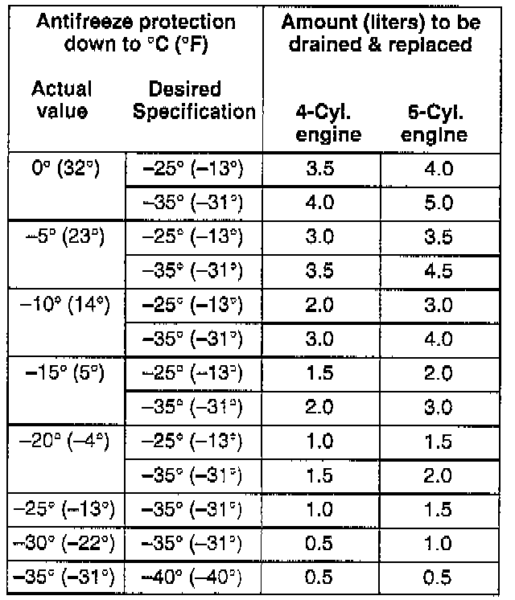

Cooling System: Testing and Inspection
CHECKING COOLANT
- Check concentration of coolant additives.
- Anti-freeze protection must be approx. -25°C (-1°F) for the US, and -35°C (-31°F) for Canada.
- For anti-freeze protection down to approx. -40°C (-40°F), the percentage of G11 may be increased up to 60%. The percentage of G11 must not exceed 60%, as higher amounts will decrease frost protection and cooling capacity.
- If anti-freeze protection is not adequate, drain off the quantity indicated in the following table and top up with coolant anti-freeze G11.

NOTE: Observe prescribed disposal instructions!
- After test drive, check coolant concentration again.
- Check coolant level in expansion tank with engine cold.
- With engine cold, the coolant level must be between the min. and max. markings of the reservoir. With engine warm, the level may be slightly above the max. marking.
- If the coolant level is too low but the antifreeze protection is adequate, add required amount according to the following mixing ratios:
^ Freezing protection down to: -25°C (-13°F)
- Anti-freeze amounts:
40 % - 2.6 liters (2.75 US qts.).
- Water amounts:
60 % - 3.9 liters (4.10 US qts.).
^ Freezing protection down to: -35°C (-31°F)
- Anti-freeze amounts:
50 % - 3.25 liters (3.4 US qts.).
- Water amounts:
50 % - 3.25 liters (3.4 US qts.).
^ Freezing protection down to: -40 °C (-40°F)
- Anti-freeze amounts:
60 % - 3.25 liters (3.4 US qts.).
- Water amounts:
40 % - 3.25 liters (3.4 US qts.).